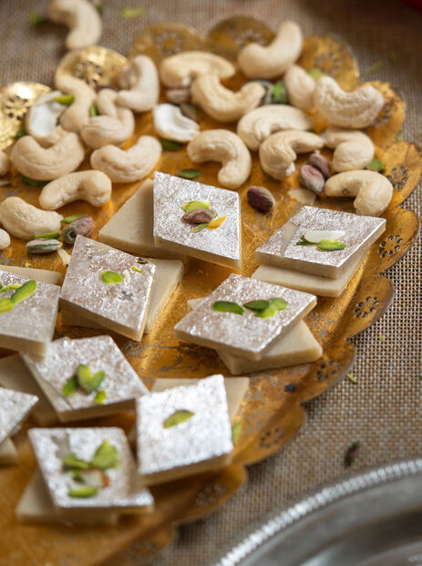

Kaju Katli is one of India's most popular and luxurious traditional sweets, traditionally prepared during festivals like Diwali and weddings. Made primarily from high-quality cashews, sugar, and a hint of cardamom or rose water, it features a melt-in-the-mouth texture and a delicate, elegant sheen.
Because cashews act as both the base and the binder, achieving the right sugar syrup consistency is the key secret to getting that classic, velvety bite without making it too hard or crumbly.